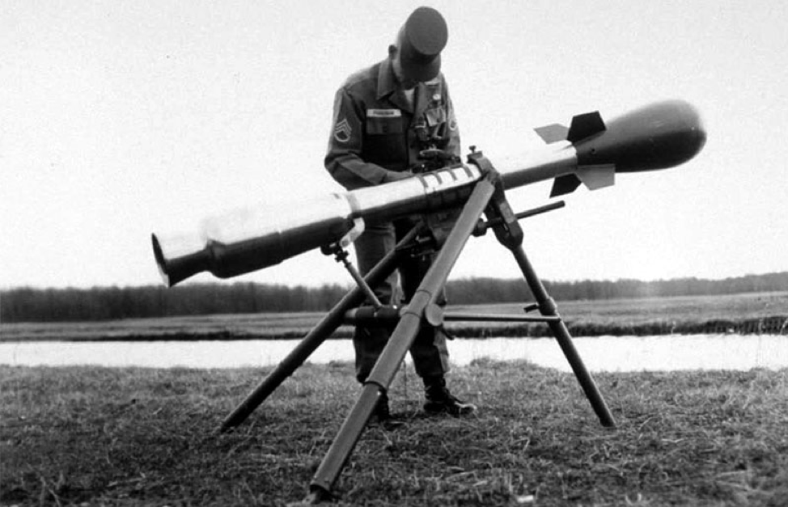
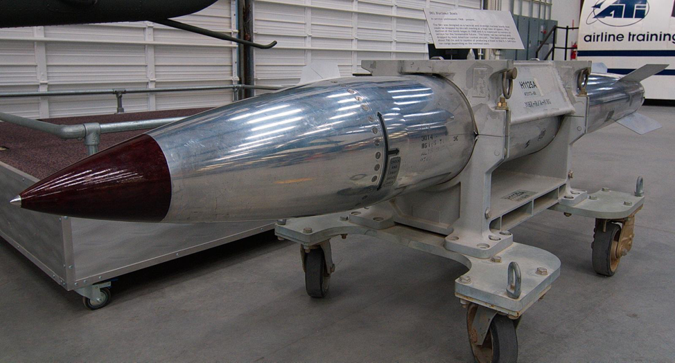

|
Greetings Defense Technology Alert Readers,
Battlefield nuclear weapons may be returning to U.S. military doctrine - and in defense circles, that’s a huge deal.
It’s not a done deal yet, but the National Command Authority is considering the arguments and U.S. Defense Secretary Mattis has said repeatedly that all ideas are on the table. 1
Understanding Tactical Nuclear Weapons
Let’s start this discussion by defining our terms: all nuclear weapon yields are measured in “tons” - that’s the amount of energy released when a ton of TNT is detonated. Tactical nuclear weapons have yields in the dozens or hundreds of tons. Strategic weapons have yields in the thousands of tons (kilotons) or the millions of tons (megatons).
Tactical nuclear weapons - also called “nonstrategic” or “tactical nukes” - are for limited battlefield use. They’re not the enormous missiles you’ve seen in underground silos or in submarines that can level cities. Tactical nukes’ relatively low yields are to counter larger ground forces, destroy command and control bunkers and other deployed assets without rendering the entire theater desolate, contaminated and uninhabitable.
Therefore, on paper at least, compared to the yield of strategic weapons, tactical nukes would seem to reduce the risk to U.S. and allied troops. The reality is more complicated, and I’ll talk more about it in a moment.
First, some background...
Tactical Nuclear Weapons and U.S. Military Doctrine
Tactical nukes once made up a significant part of the American nuclear arsenal. For much of the Cold War, the U.S. deployed them on submarines, surface ships, aircraft and on overseas bases in strategic locations. Even though “tactical” in scope, battlefield nukes played a strategic role in Europe and elsewhere against communist nations that typically field much larger armies than democracies.2

U.S. Army "Davy Crockett" Tactical Nuclear Weapon
In Europe during the 1980’s, for example, the U.S. deployed tactical nuclear weapons as a response to the Soviets fielding a much larger, offensively-positioned army and deploying medium-range missiles aimed at NATO nations. Tactical nukes were also deployed in South Korea beginning in the 1950s to counter the much larger armies of North Korea and China.
Fast-forward to the fall of the Soviet Union in 1991, then-President George H.W. Bush made big cuts to the American tactical nuclear arsenal3, withdrawing most of them from abroad and destroying many of them. The U.S. has not deployed them since.

B-61 Tactical Nuclear Bomb
But the U.S. has continued to modernize its strategic nuclear arsenal for potential conflicts with China, Pakistan and other rival powers. Today, battlefield nukes are NOT part of American military forces or plans. But all that might be changing…
Why are some wanting to bring them back now?
Quite simply, our South Korean allies are getting very nervous about their nuclear armed - and slightly mad - cousin to the north. As you know, North Korean dictator Kim Jung-un has been testing nuclear weapons, threatening nuclear war with the U.S. and launching intercontinental ballistic missiles over the airspace of its neighbors. The situation is reaching crisis levels of instability.
Still, South Korean president Moon Jae-in is against introducing nuclear weapons of any kind back into the country. But Defense Minister Song Young-moo and some of his generals - and some U.S. generals - disagree. Tactical nukes would give the U.S. more response options, the thinking goes.
But others see a flaw in that reasoning…
Crossing the Nuclear Line
That flaw is all about crossing the nuclear line. There are some very basic aspects to the nuclear line being crossed:
- The risk of unintended escalation
- America’s global standing
- The moral risk of use in Asia
First, the equivalent response argument I mentioned above is problematic. Think of it this way: in nuclear war, the advantage always goes to whoever strikes first. There are some very good reasons for this.
One is the element of surprise. A first strike may result in a nuclear response, but it may not. It depends on the scale of the attack and the second-strike capabilities of the victim.
For another, it’s probable that a first-use nuclear attack wouldn’t be a one-and-done event. It’s more likely that a “first strike” would be many strikes as one, making the enemy incapable of a response. First strike logic is to “go big.”
A third reason is the likely event of an electromagnetic pulse (EMP) blast. An EMP blast is a nuclear warhead detonated at a high altitude, even from space. The EMP burst would cut off most if not all electrical power and destroy all unprotected circuitry, effectively rendering the enemy blind, deaf and dumb. A pre-emptive EMP attack has been standard first strike nuclear war doctrine since the 1960s.
Tactical Weapons with A Strategic Impact
Some military experts say that “tactical nuclear weapon” is a misleading term because all nuclear arms affect the strategic balance of power, no matter their yield or intended purpose.4 That’s the bitter truth about battlefield nukes - if used first as a response to a threat, immediate escalation to strategic nukes is all but certain. In fact, U.S. policy is to respond to a first-use of tactical nuclear weapons with our strategic nuclear arsenal.
I would expect North Korea do the same.
Thus, tactical nuclear weapons have a strategic impact and invite a strategic nuclear response. Just the fact of re-introducing tactical nukes to South Korea may push North Korea into a strategic, first-strike reaction. Given the unpredictable and possibly paranoid nature of the North Korean leader, it’s a very real risk.
That said, the one outcome of this crisis that the U.S. cannot afford is for North Korea to retain its nuclear weapons. If it does, the U.S. defense treaties in the region would be shown to be worthless. American credibility in the world would be severely damaged.
Finally, the U.S. is the only country in the world to wage war with nuclear weapons. We did so against an entrenched Japanese enemy in 1945. But to do so again against another Asian nation would risk putting the U.S. in a very questionable moral light. It would damage our standing in a very large segment of the world and cast suspicion on our motives.
All of these are very good reasons NOT to rely on “limited yield” battlefield nuclear weapons.
Sending the Right Message to North Korea, China and the World
And yet, the threat of nuclear war with North Korea persists. Not stepping up defensive capabilities - including battlefield nukes - may send a message of weakness, inviting further hostilities. For that reason, it may be necessary to redeploy tactical nukes to convey to Kim Jung-un - and China - that the U.S. and South Korea are deadly serious about defending against a North Korean attack.
Shaping China’s viewpoint is critical because they’re North Korea’s only real ally. The goal of American policy may well be to show China that a nuclear exchange with North Korea may be probable in order to prompt them to remove the North Korean leader and his nuclear weapons. Or, it may prompt Jung-un’s military leaders to remove him themselves.
Whatever happens, America’s global leadership, war in the Asian-Pacific region and South Korea’s survival are all at stake. In any case, a nuclear-armed North Korea is an outcome that South Korea, Japan and the U.S. can’t tolerate. The little dictator in Pyongyang casts a very long and dark shadow indeed.
Finally, deploying new tactical nuclear weapons is highly controversial for financial reasons as well. Developing, testing and deploying battlefield nukes - or even simply repositioning ones - is expensive. Critics say that it’s a cost the U.S. doesn’t need to pay with little to no real gain from it.
The Bottom Line on Tactical Nukes
Let’s get real here - there are serious problems with battlefield nukes that everyone needs to take into account (that includes both Koreas and China). They include:
- Collateral Damage - Even the smallest nuclear weapons are “not tidy.”5 They spread fallout over vast areas, potentially killing large numbers of people on both sides of a conflict. This increases the risk that a tactical nuclear attack will escalate into a full strategic conflict. It would also create risks for American allies like South Korea and ambivalent powers like China, making them less likely to support American actions.
- Potential Escalation - Tactical nukes will raise the risk of a nuclear war. But that elevated risk may trigger China to act against the North Korean leader. On the flip side, if the U.S. has to use nukes on the battlefield, deterrence would have already failed. North Korea would likely attack with their strategic nuclear weapons.
- Unnecessary costs - There is nothing tactical arms can do that conventional weaponry cannot. Deploying such arms in the Korean Peninsula, or anywhere else with a large American military presence, would thus be a waste of money. Moreover, many strategic nuclear weapons have adjustable yields, which can be dialed down to tactical levels. This means that even if there were a need to use nuclear weapons on the battlefield, the military can meet that need without developing a new line of tactical warheads.
- Increased Testing - Deploying new tactical nuclear weapons would require the U.S. develop, test and position such weapons. This won’t help in the Korean crisis and would give rival powers like Russia, Pakistan and China an incentive to carry out tests of their own, raising the specter of a new nuclear arms race.
Will Deterrence Work?
Those who favor tactical nukes say that preventing nuclear war doesn’t mean never brandishing nuclear weapons. That’s what Kim Jung-un is doing. Redeploying battlefield nukes into South Korea would be doing the same thing to deter further aggression from the north. The thinking is that deterrence requires maintaining a number of different attack options - and threats - for different scenarios.
Some also point out that Russia, China, India and Pakistan have or are developing such weapons, and that if the U.S. doesn’t, America won’t be up to the challenge should a conflict erupt.6 Rather, if done right, they believe that deploying tactical nuclear weapons could actually save money (nukes are cheaper than troops), enhance American capabilities and set the stage for a more stable world order.
But are these assumptions true? Most probably are. But the problem with the world order is that someone is always trying to change it. It would appear that sooner than later, some form of nuclear weapon will be used to accomplish just that. North Korea is simply ahead of the curve, but Iran isn’t far behind. Undoubtedly, the whole world is watching how the U.S. handles this challenge.
I’ll keep you posted as more information is available on the development of tactical nuclear weapons. If an investable idea presents itself, I’ll let you know.
For now, I’ll be back to you on Friday with this week’s five recommended reads.
Cordially,
|